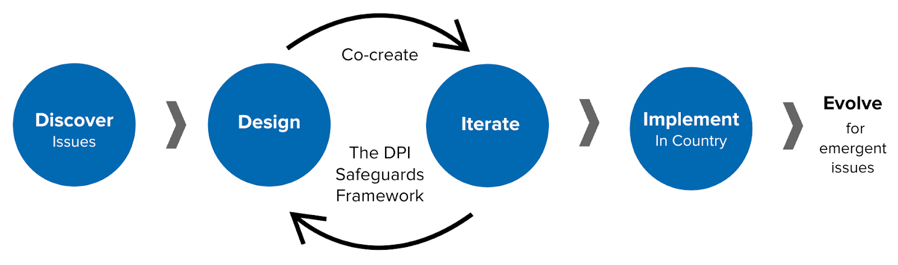

Universal Safeguards for Digital Public Infrastructure
As digital public infrastructure (DPI) becomes integral to society, governance and finance, we must collaboratively establish safeguards to ensure global protection of fundamental rights.

As digital public infrastructure (DPI) becomes integral to society, governance and finance, we must collaboratively establish safeguards to ensure global protection of fundamental rights.
Save the Date: Thursday, 14 December 2023, 16:30 UTC Open to everyone who is interested in learning about how stakeholders across sectors can contribute to the initiative and facilitate the safe, inclusive and sustainable adoption of DPI in countries.
Register here
Decisions by countries on how to design, build and sustain their DPI will have significant lasting consequences on their opportunity to drive inclusive growth, innovate with speed and achieve the Sustainable Development Goals (SDGs) by 2030. As risks of exclusion and surveillance surface during large scale digital transformations, we must proactively declare, enshrine and embed universal safeguards for DPI design and implementations worldwide.
The Universal Safeguards for DPI initiative launched on September 17, 2023 is a critical milestone. It shows the commitment to protecting everyone, everywhere and our planet while accelerating the achievement of the SDGs. It unifies and builds upon the work done in this critical area by the ecosystem of experts and institutions globally.
SafeDPI aims to accelerate the achievement of the SDGs, by ensuring that DPI remains focused on safeguards. Through principles, practices and processes, SafeDPI helps mitigate unintended risks of DPI that may negatively impact SDG acceleration.
The Universal Safeguards for DPI (SafeDPI) initiative will focus its work on three key areas:
It is envisaged that this strategic focus will help in creating an environment in which DPI implementation is not only secure and inclusive but also practical and adaptable to diverse needs.
The initiative is dedicated to building a robust DPI Safeguards Framework through collaborative multi-stakeholder engagement - designed to respect, listen to and learn from their input and experiences. Stewarded by the UN, SafeDPI is a public space for collaboration around the development of safe DPI and a public good. Your contributions and commitment to SafeDPI will ensure our collective responsibilities to empower countries with the tools required to succeed.
Curate existing DPI resources and implementation experiences to identify issues and inform the development of the DPI Safeguards framework, drawing from a knowledge base of learnings, successes, partner spotlights, and country case studies.
Design, iterate and contribute to the framework through multi-stakeholder collaborations, using workshops, convenings and working groups to gather valuable inputs and experiences. These collaborative sessions are crucial in ensuring that the framework effectively addresses and reflects the real needs of those it is intended to serve at the country level.
Apply the framework to specific country use cases, while continuously collaborating with the DPI community and ecosystem and adapting to the evolving landscape to maintain relevance and impact in countries.
A call to action! We want to hear from you. The Universal Safeguards for Digital Public Infrastructure will leverage the broader ecosystem’s efforts and experiences, by collaborating with lead practitioners, champions, advisors, experts, and community centered stakeholders to guide its direction.
Visit the SafeDPI Knowledge Repository
Submit your paper, learnings, use cases or resources on DPI on an ongoing basis.
Nominate yourself or someone you know for one of the working groups Deadline: Jan 15, 2024 at 11:59pm EST
Nominate SafeDPI Advocates, a High-Level group to lend advocacy leadership and strategic guidance to SafeDPI by Jan 31, 2024 at 11:59pm EST.
Subscribe to stay updated on future activities.